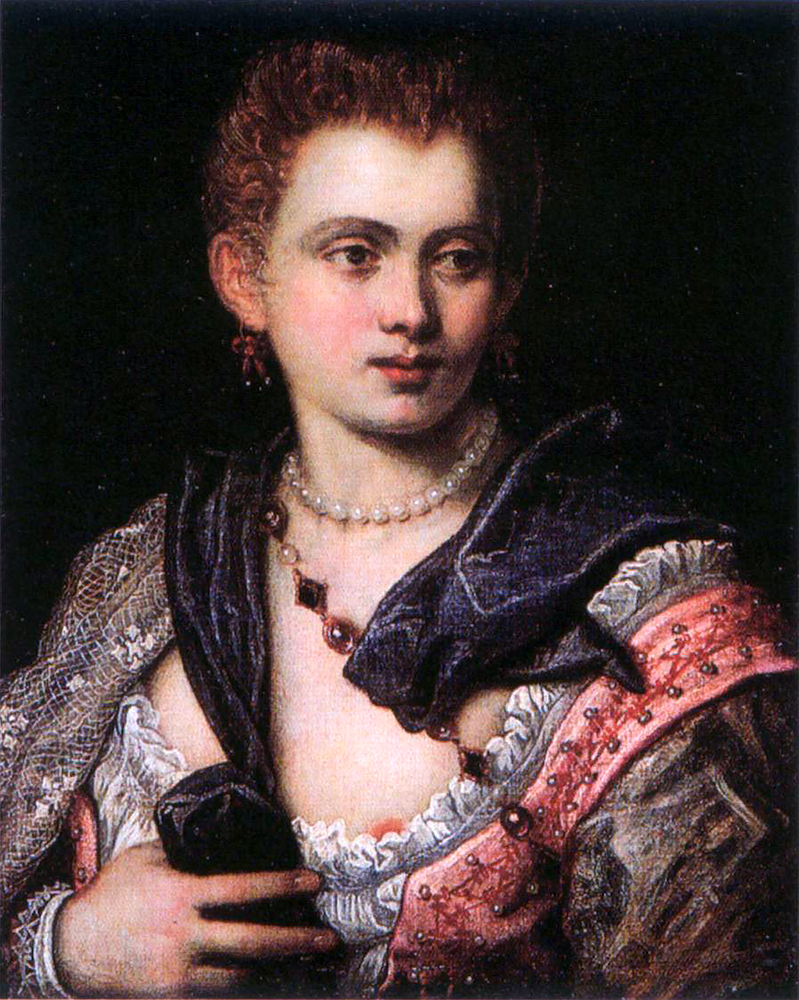
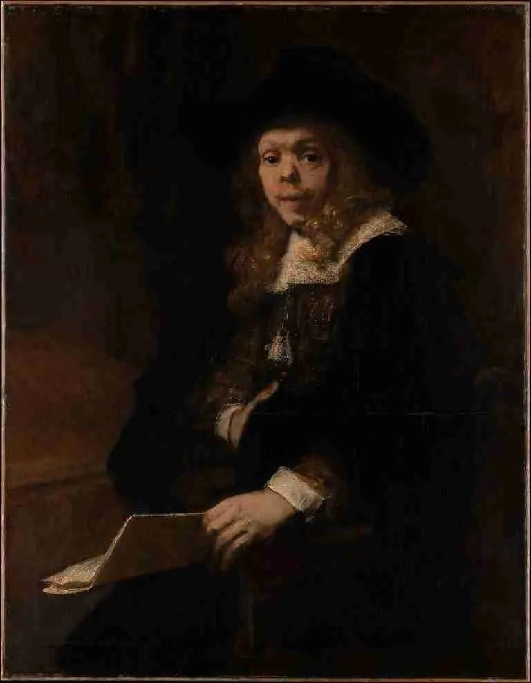

Uma abordagem feita pelo Franz X. Eder, em Sexuality in Premodern Europe, propõe compreender a sexualidade como uma prática social,onde se tinha uma diferença entre as normas estabelecidas e as práticas realizadas pela sociedade. A vida cotidiana tinha a prostituiçao como o maior exemplo das mais diversas relações, seja ela envolvendo a família,casamento,gênero, economia e sexualidade.
A contribuição para a expansão desse comércio foi o crescimentos das cidades onde as circulações de comerciantes, marinheiros, soldados e viajantes sejam eles homens que se criou uma demanda para lugares de entretenimento como tavernas, hospedagens, hospedarias e áreas portuárias até mesmo as ruas eram locais desses encontros.
As experiências eram integradas à própria paisagem urbana que usavam desse espaço para a ampliação e expansão de estabelecimentos criando assim uma circulação noturna totalmente ligada ao comércio sexual onde se tinha pessoas, dinheiro e mercadorias. Um grande exemplo disso seriam as instalações de luminárias públicas em Amsterdã, em 1688.Diversificando ainda mais as experiências de ruas nesse comércio, como as casas de prostituições, cortesãs tendo até mesmo mulheres responsáveis pela administração de estabelecimentos. Mas não se engane a integração da protituicao na paisagem urbana, não significava aceitação moral.Muitas das vezes as autoridades as toleravam mas sempre tentando reprimi-las ou em algum casos regulamentá-las causando assim uma sequências de mudanças na organização desse comércio.
Existe uma ligação também muito forte entre a prostituiçao e a economia já que se tinham diversas formas de fazer negócios. Seja diretamente por uma prostituta e o cliente ou por uma rede envolvendo proprietárias de estabelecimentos, intermediárias, fornecedores credores entre outras, tudo isso em diversos contexto dependendo de suas origens ou algum locais onde se tinha regulamentos tributadas pelas autoridades.
Veneza apresenta um exemplo dessa organização. Segundo Paula C. Clarke, entre 1360 e 1460 onde o governo veneziano se fez uma forma legalização desse sistema onde a protituicao era legalizada, sendo concentradas em determinada áreas da cidade e supervisionada por funcionários públicos.
Nesse sistema a participação de mulheres aumentou onde bordéis autorizados tinham até proprietárias de estabelecimentos,assumindo as funções de organização desse negócio e a contagem dos lucros desse comércio.
Vale ressaltar que não se tinha uma regra para a introdução dessas mulheres na prostituicao mas as condiçoes financeira dessas mulheres se tinha um grande peso em sua maioria sejam elas por não possuir maridos, família ou recursos próprios se encontrando uma possibilidade de sobrevivência nas quais muitas vezes não eram sua única fonte de renda, seja por ocupações ou até mesmo trabalhos para completar renda.
Como já foi dito a diversidade impede de que todas as prostitutas fossem iguais ou classificadas da mesma maneira se tendo diferentes estilos de vidas e diferentes rendas.
Existiam também as cortesãs que eram mulheres que tinham relações prolongadas com homens ricos ou aristocráticos que além do pagamento era comum receberem jóias, roupas, moradia e proteção.
Conhecida por suas cortesãs Veneza ficou famosa por possuir cortesãs que sua reputação ia além da relação sexual,por possuir formação cultural circulavam em ambientes de nao pertencimentos femininos.Exemplo essa seria a verônica Franco filha e neta de também cortesãs onde no século XVI também escrevia poesias e cartas geralmente envolvida com membros da elite e homens importantes da época mostrando sua influência.

As aparências dessas mulheres eram de suma importância onde Tessa Storey, ao estudar objetos de luxo associados às prostitutas e cortesãs da Roma nos mostra como as joias estavam relacionadas entre homens e mulheres,e os presentes recebidos por elas se tinha uma significado oculto a esses objetos. Sendo criado assim uma imagem de luxo e sedução fazendo parte de uma construção de imagem de uma cortesã, onde muita vezes competiam com as mulheres de elite pelo luxo onde Veneza criou restrições para esse pompa,para haver uma distinção entre elas e mulheres de elite mas que muitas vezes não eram seguidas continuando as riquezas das cortesãs.
Em uma sociedade onde a religião era a principal forma de organização social vemos que a única sexualidade legítima era através do casamento nas quais relações fora dele eram consideradas pecado.
A protituiçao é associado até os dias atuais como algo sujo, que ameaça a família,causando uma desordem moral.Essa visão era a norma mas na prática era algo totalmente diferente onde era comum os maridos terem casos extras conjugais principalmente nesses estabelecimentos,se tornando assim um apoio a esses negócios. Nos mostrando uma contradição em muitas cidades, por exemplo Roma sendo referência do catolicismo pelo mundo,mas a vida noturna sendo algo difícil de se eliminar então se teve, tentativas de concentrar as prostitutas e os prostíbulos ao um único local por autoridades locais mas que não necessariamente param suas circulações em outros locais.
A coexistência dessas tolerâncias onde por meio da voz cristã se tinha a reprovação dessas atividades com diversas tentativas de pelo menos controlá-las e diminuir sua visibilidade nos centros urbanos são mesmo tempo que essas políticas por meio da reforma moral associadas à Contrarreforma buscavam controlar a presença desse comércio na cidade.
A prostituição também nos revela a desigualdade entre homens e mulheres aonde a honra feminina estava fortemente ligada à sua castidade afetando assim seu casamento e a reputação familiar dessa mulher onde uma acusação de escandalos ou má comportamento é algo inabalável para sua reputação.
Vemos isso a partir do momento na qual a sociedade constrói diferentes expectativas e papéis para homens e mulheres. Já que o homem podia ocupar o lugar do cliente mas a mulher era mal vista sendo uma vergonha por ser prostituta.
Documentações nos mostra a evidências dessas diferenças onde mulheres eram mal vistas e acusadas, enquanto os clientes apareciam poucos nos registros onde essas relações comerciais e não eram submetidas ao mesmo julgamento moral.
Quando falamos de prostituições falamos também da sífilis reconhecida como epidemia na Europa no final do século XV. Foi associada a prostituição sendo sua imagem como fonte de perigo e contaminação por meio das prostitutas.

Em Gender, Sexuality, and Syphilis in Early Modern Venice, Laura McGough demonstra que a sífilis não pode ser compreendida simplesmente como uma doença das prostitutas. sua disseminação estava atrelado também há relações extra conjugais por parte dos maridos na qual e se deitavam com suas mulheres passando assim pra elas sífilis.Reforçando assim estigmas em cima de prostitutas para usar do controle sobre mulheres consideradas sexualmente desviadas,mas que é esquecido por falta de culpa a sua disseminação por parte de um privilégio masculino.
Como já foi citado é necessário a diferenciação de tipos de prostituição onde muitas vezes passava para uma exploração as vendas desse corpo. Onde algumas mulheres,sim tinham problemas com situações de violência e dependência econômica por coesões por parte de um público majoritariamente masculino onde mulheres não passavam de um produto.Alguns casos se tinha uma possibilidades de ação dentro desse mercado na quais passavam a seram proprietárias e participantes da administração desses estabelecimento com uma independência com a clientela criando assim mais papéis para as mulheres desse mercado